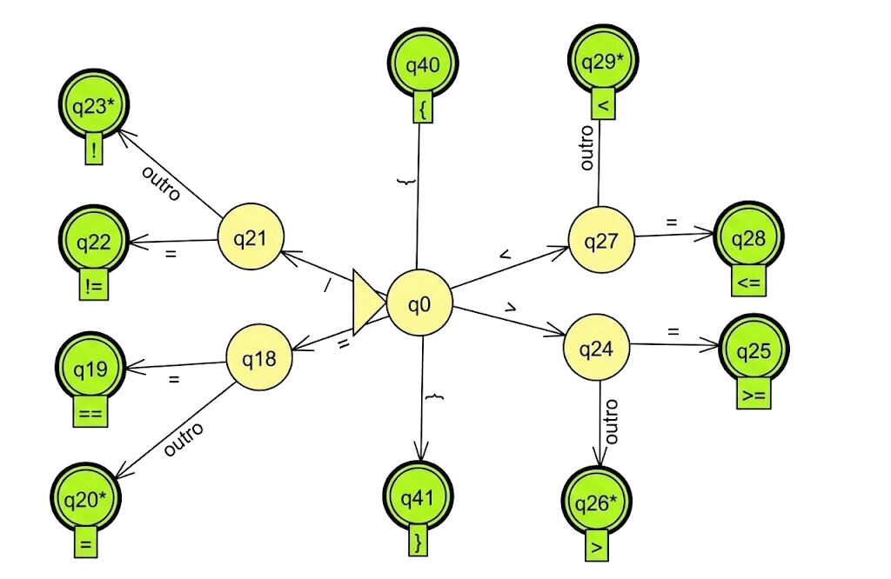

O objetivo central do compilador é transformar uma linguagem de alto nível em uma linguagem de baixo nível.
Essa saída será posteriormente convertida em binários pelo montador.
O processo é formalmente estruturado em etapas com responsabilidades distintas.
Processo de Compilação
O compilador atua como um sistema de conversão de programa fonte para programa objeto.
Programa Objeto: Representação intermediária unida a bibliotecas para gerar o executável.
Estrutura: Dividida em Análise (Front-end) e Síntese (Back-end).
Compilador vs. Interpretador
A distinção reside na execução imediata versus a geração de um novo programa.
Compilador: Gera um programa objeto.
Interpretador: Recebe o código fonte e as entradas do usuário, executando as instruções imediatamente.
Front-end
Responsável pela análise do código fonte para gerar uma Representação Intermediária (IR).
Análise Léxica: Fluxo de caracteres para tokens.
Análise Sintática: Estrutura gramatical e geração da AST.
Análise Semântica: Verificação de tipos e escopo.
Estrutura do Front-end
Análise Sintática e Árvore (AST)
AST (Abstract Syntax Tree): A estrutura de dados mais crítica.
Representa agrupamentos hierárquicos (ex: expressões, blocos if).
Modo Pânico: Estratégia de recuperação de erro que descarta tokens até um ponto de sincronização (ex: ;) para continuar a análise.
AST error: name 'hashlib' is not defined
Back-end: Otimização e Geração
Foco em eficiência e tradução para o código alvo.
Constant Folding: Cálculo de expressões constantes em tempo de compilação (ex: 20 * 60 vira 1200).
Geração de Código: Navega pela AST (padrão Visitor) e emite instruções para a máquina alvo.
AST error: name 'hashlib' is not defined
Questões de fixação - 1 / 3
Utilizando a analogia com a linguagem natural apresentada no texto (análise morfológica vs. análise gramatical), explique a diferença fundamental entre as responsabilidades do analisador léxico e do analisador sintático além disso, diga o que cada um produz como saída.
O analisador sintático é capaz de confirmar que a expressão numero + texto está estruturalmente correta (um operador somando dois identificadores). No entanto, isso não garante que o programa esteja correto. Explique como o analisador semântico atua nesse cenário e cite outro tipo de verificação crítica que é responsabilidade exclusiva desta etapa.
Questões de fixação - 1 / 3 (Cont.)
Explique por que é vantajoso para um compilador utilizar estratégias como o "Modo Pânico" em vez de interromper o processo ao encontrar o primeiro erro sintático. Como essa estratégia utiliza "pontos de sincronização" para retomar a análise?
Considere a expressão int x = 2 * 3 + a;. Descreva como o processo de otimização via Constant Folding alteraria a Árvore de Sintaxe Abstrata (AST) dessa expressão antes da geração de código e explique qual é o benefício direto dessa alteração para o programa final.
Funções do Analisador Léxico
A porta de entrada do compilador.
Agrupar caracteres em lexemas e classificá-los.
Remover brancos e comentários.
Abordagem Orientada à Demanda: O Scanner só fornece o próximo token quando solicitado pelo Parser (get_next_token).
Fluxo Orientada à Demanda
Definições Fundamentais
Termo
Descrição
Exemplo
Lexema
Conteúdo bruto exato no código.
while, contador, 42
Padrão
Regra de formação (Regex).
"Letra seguida de letras/dígitos"
Token
Par <tipo, valor> categorizado.
<IDENT, "contador">
Erro comum: confundir o texto lido com sua classificação abstrata.
Engenharia de Entrada: Buffering
Ler o disco byte a byte é lento; o SO entrega blocos grandes (ex: 4KB).
Par de Buffers: Divide a memória em duas metades lógicas.
Resolve o Problema da Fronteira: Garante que um lexema que cruza o final de um bloco não seja perdido ao carregar o próximo.
Sentinelas: Caracteres especiais no fim do buffer para evitar verificações constantes de limite.
Exemplo de Buffering
Tabela de Símbolos
Funciona como um dicionário que relaciona identificadores a referências numéricas únicas.
Armazena nomes de variáveis e funções (não palavras-chave).
Sem Duplicatas: Cada identificador entra apenas uma vez.
A lista de tokens registra cada ocorrência, mas aponta para o mesmo índice na tabela.
Questões de fixação - 2 / 3
Considere o trecho de código: if (score >= 100) return;.
(a) Identifique os lexemas presentes nesta linha.
(b) Classifique cada lexema em seu respectivo token.
(c) Explique a diferença entre o lexema score e o padrão (pattern) que define um identificador.
Explique como a abordagem orientada à demanda economiza recursos computacionais no caso de um erro de sintaxe encontrado logo no início de um arquivo extenso.
(a) Descreva o "Problema da Fronteira do Buffer" e como a técnica de Pares de Buffers soluciona essa questão. (b) Qual é a função dos caracteres sentinelas?
Cite duas vantagens de se implementar um scanner manualmente em vez de utilizar geradores automáticos.
Expressões Regulares (Regex)
Álgebra para descrever padrões léxicos de forma precisa.
União (|): Escolha entre padrões.
Concatenação: Sequência de caracteres.
Fechamento de Kleene (*): Zero ou mais repetições.
Convenções:
+: Uma ou mais ocorrências.
?: Opcionalidade.
[ ]: Classes de caracteres.
[^ ]: Negação de classe.
Pipeline de Automação Léxica
Como Regex se torna código:
Regex $\rightarrow$ AFND (Algoritmo de Thompson).
AFND $\rightarrow$ AFD (Algoritmo de Subconjuntos).
AFD $\rightarrow$ AFD Minimizada (Redução de estados).

Compiladores modernos frequentemente usam scanners manuais para maior controle e melhor tratamento de erros.
Questões de fixação - 3 / 3
Descreva, em português, quais tipos de cadeias são aceitas por: (a) a(a|b)*a; (b) (0|1)*111(0|1)*; (c) [A-Z][a-z]*.
Escreva uma expressão regular para identificadores que começam com _, seguido por ao menos uma letra maiúscula, terminando com qualquer combinação de letras ou dígitos.
Escreva uma regex para números de ponto flutuante: sinal opcional, ao menos um dígito antes e depois do ponto obrigatório.
Escreva uma regex para hexadecimais em C (começa com 0x, seguido de um ou mais 0-9 ou a-f).
Regex para: (a) binários; (b) arquivos .c ou .h; (c) começa com T, qualquer letra/dígito, mas não termina em dígito.
Conclusão e Próximos Passos
Vimos como o compilador fragmenta o código em tokens e estruturas hierárquicas (AST).
Entendemos a importância da eficiência no Scanner (Buffering) e a precisão das Regex.